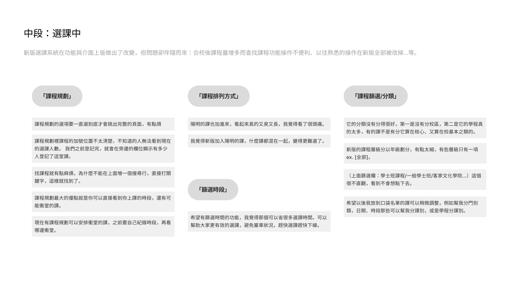

作品集
Jie Yi Feng
關於我
線上選課系統使用者研究
UXR
透過研究合校後上線的新選課系統，從使用者體驗上提供學校可改善的設計建議
合校後上線的新選課系統的使用者經驗研究是「哈哈是UX啦」自主學習社團正式進行的第一個 Side Project，也有
在 Instagram 上進行一系列分享
。國立陽明交通大學合校後上線的新選課系統緊急上線後伴隨著許多尚且不完善之處以及諸多限制條件，本團隊從身為主要使用者的立場出發，進行了一系列資料分析與調查研究，並將結果匯總，在考量到利害關係人的需求後後提出具體設計建議，供學校行政單位參考，同時也希望此次立足於系統使用者真實需求的研究調查，能夠為選課系統未來的優化提供改善依歸。
設計流程
系統現狀
在交大與陽明合校後，新的選課系統在很緊急的情況下上線了，初次選課時狀況頻傳，學生們的抱怨也充斥在學校各式網路平台的討論上，出現的問題包含操作使用不直覺、無法確定自己到底有沒有確認選課內容、流量過大系統崩潰無法使用等等。因此，我們決定由使用者研究的角度切入了解選課系統這個議題的更多可能性。
研究規劃
在決定研究的議題後，我們規劃了以下研究進程：
初步研究
加深對於選課系統現狀的了解，不僅能讓團隊成員在理解上有更好的共識，也能對後續研究方向以及設計改版切入點有一個初步的構思。此階段我們將拓展研究的廣度，不只了解選課系統的現狀，也更進一步去搜集使用者的意見，了解他們覺得新系統怎麼樣、操作起來的感想等。
深入研調
在對議題有更全盤的了解後，我們將加深對於議題深度的了解。我們計劃邀請數位有使用過新版選課系統的使用者進行訪談，深入了解他們的選課行為，同時也分析潛在的需求及痛點。於此同時也訪談相關利害關係人，以便產出更直觀且可執行的設計建議。
設計建議
在進行相關競品的分析後，我們將收斂兩階段研究的所得，在評估學校單位的可執行性歸納出最終的設計建議，提供給校方作為後續迭代改版的參考。
初步研究
Sitemap 彙整資訊架構
我們首先整理了現有系統的 Sitemap，利用此方式熟悉系統現有的資訊架構。
易用性測試
其次進行了現有系統的易用性測試，而後以啟發式評估（Heuristic Evaluation）的方式找出介面設計中的使用性問題，並當成是迭代循環設計流程過程中的一部分。
啟發式評估的研究指出 5 位評估人員即可以發現約 75% 的可用性問題。本團隊 7 位成員參考通用度較高的 10 條易用性原則，配合自身的專業知識與經驗，共用審視選課系統網站上的易用性問題。
點此查看評估紀錄
問卷調查
最後我們透過問卷調查的方式，統計我校學生對於新選課系統的主要看法。
深入調研
針對選課系統使用者的深入了解以半結構式的訪談進行，我們邀請到 8 位在校生進行我們的訪談，著重於了解他們的選課行為，也將操作選課系統過程中的使用痛點聚焦並深化。而後我們將龐大的訪談資料歸納成三個階段進行解讀：
前期：選課前
在選課前的階段，使用者除了對於選課有初步的想法外，部分受訪者也會額外做事前準備工作，如已有計算學分、查看課程評價等。
中期：選課中

選課中的過程可以很明顯的發現，雖然新版選課系統在功能與介面上皆做出了改變，但問題卻伴隨而來，如合校後課程量增多而查找課程功能操作不便利、以往熟悉的操作在新版全部被改掉等。
後期：選課後
最後，儘管新版選課系統一定程度的改善了舊版的缺點，但是還是有些許功能需要改進。
使用者旅程地圖
調研的最後，我們以使用者旅程地圖的方式協助我們再次收斂並檢視龐大的訪談資料，同時也更進一步挖掘選課系統需要改善的問題。
設計建議
有了兩階段的研究資料後，我們首先透過競品分析的方式，分析他校的選課系統或選課輔助軟體是如何應使用者的問題的，隨後再評估可行性，歸納出最終提供給校方的設計建議。
競品分析
點此查看分析紀錄
How Might We
最後，我們透過五個句子總結當前選課系統需要被解決的問題，提供選課系統迭代時可依循的方向。
1. 我們該如何讓使用者快速上手選課系統，不用花很多時間摸索？
2. 我們該如何協助使用者更方便直觀地確認已經選上的課？
3. 我們該如何協助不同校區的使用者快速找到他想要的課？
a. 如通過改善分類方式，讓學生在選課時第一時間清楚課程屬於哪個校區、學院、是否有優先選擇權等。
4. 我們該如何讓使用者登入更方便？
5. 我們該如何提升系統整理，讓學生在選課時能夠清楚掌握重要資訊？
a. 如該學期已選學分數、已完成與待完成課程學分數量、課程類別等。
Next: #Withyou